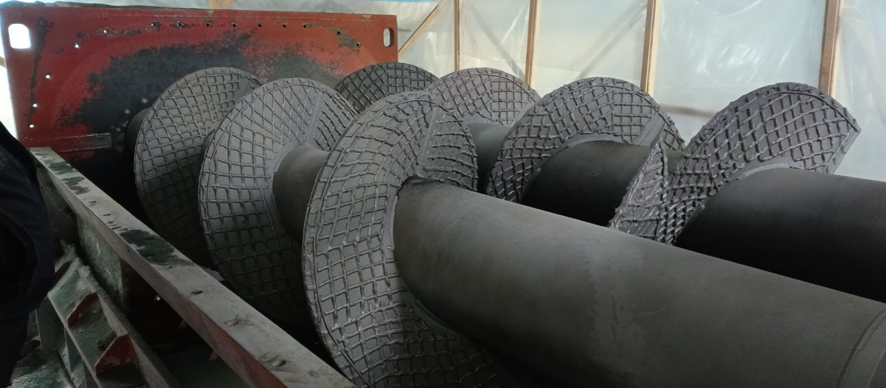
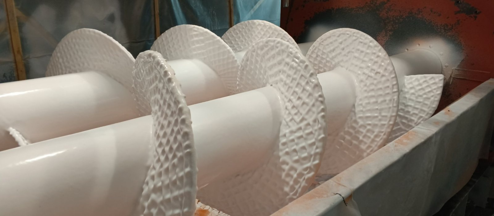
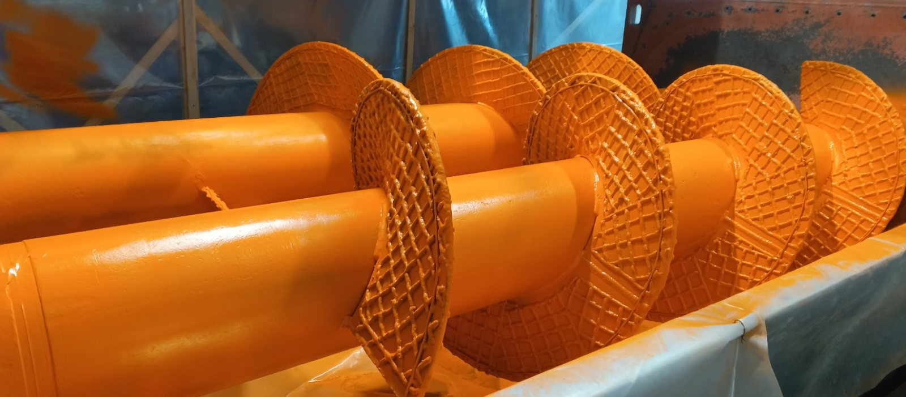
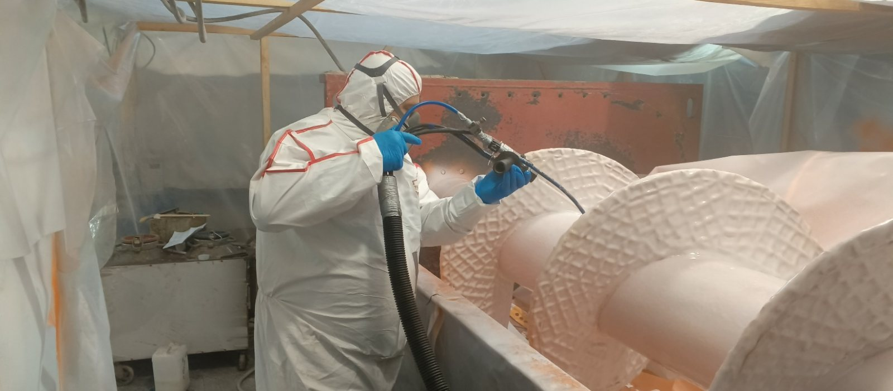
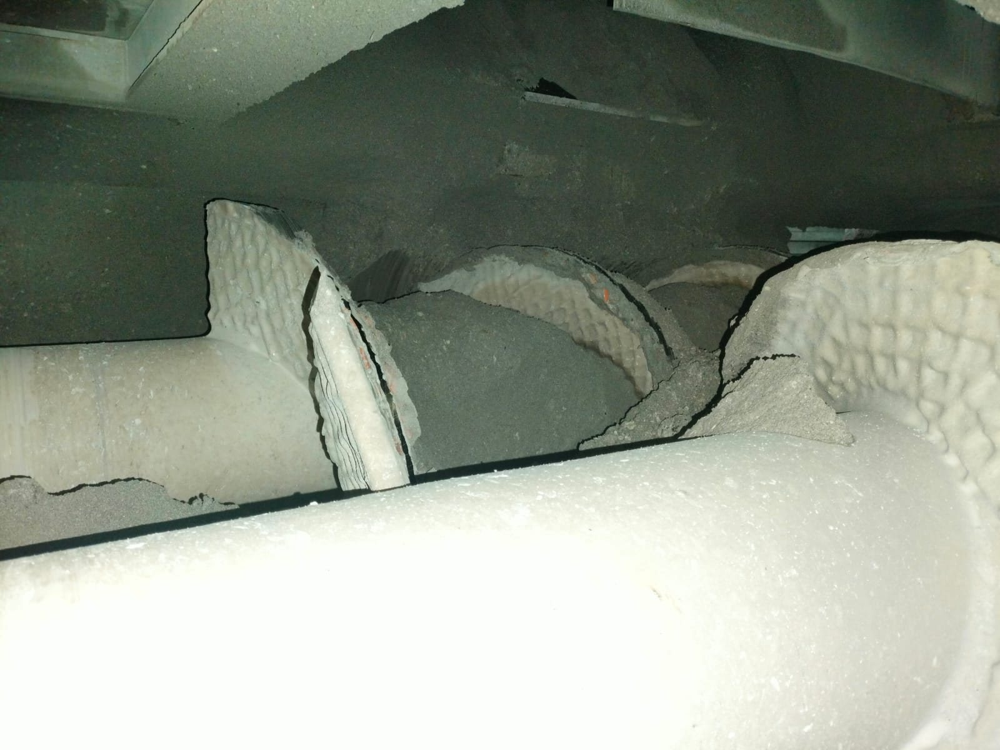

мультикрит.рф · +7 (3412) 32-41-51 · производство: Удмуртия, с. Завьялово, пер. Планетный, 5
Шнеки делителя сырьевой смеси (ноябрь 2024)


Порода налипала на шнеки, питатель дважды в сутки останавливали на очистку
На шнеках делителя сырьевой смеси распределительного питателя цементного производства налипала сырьевая смесь: она прилипала к металлу витков и вала, и делитель переставал равномерно распределять поток. Для очистки питатель вместе с подающим конвейером останавливали дважды в сутки. Ключевая причина простоев — не столько абразивный износ, сколько адгезия материала к поверхности.
Антиадгезионное эластомерное покрытие холодного отверждения на рабочих поверхностях
На витки и вал нанесли покрытие эластомером МультиКрит795 — полиуретаном с высокой абразивной стойкостью и низким коэффициентом трения:
- Дробеструйная обработка: степень очистки Sa 2.5–3.0, шероховатость 200 мкм
- Обеспыливание и обезжиривание очистителем МультиКрит 995
- Грунты МультиКрит 017 и 035 — адгезия покрытия к металлу
- Напыление эластомера установкой напыления полимеров МультиКрит М700, полимеризация
Налипание прекращено, остановы на очистку исключены, стойкость подтверждена
Порода перестала налипать на шнеки, регулярные остановы для очистки исключены, подающий конвейер работает бесперебойно. Контрольный осмотр показал высокую сохранность покрытия: на витках и валу износа нет, износ отмечен только по торцам пера шнека.
Работы в срок · долговечность подтверждена эксплуатацией| Состояние | Было | Стало |
|---|---|---|
| Налипание породы | Дважды в сутки останов на очистку | Прекращено, остановы исключены |
| Работа питателя и конвейера | Простои, узел не распределяет поток | Бесперебойная работа |
| Рабочая поверхность витков | Металл, порода налипает | Антиадгезионное покрытие 95 Shore A, стойкость подтверждена эксплуатацией |
Применимо там, где налипание сырьевой смеси и абразивный износ выводят из ритма распределительные и транспортирующие узлы: шнеки питателей, течки, лотки, футеровки бункеров в цементном и горнорудном производстве. Антиадгезионное эластомерное покрытие снимает налипание и принимает абразивную нагрузку на себя.


